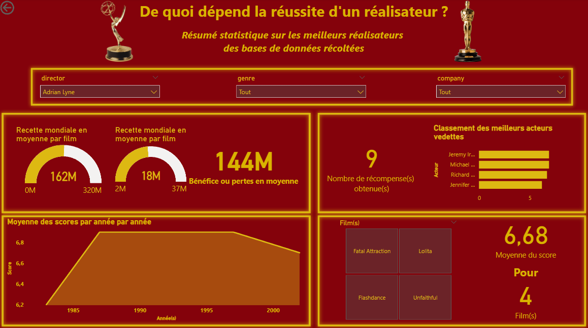
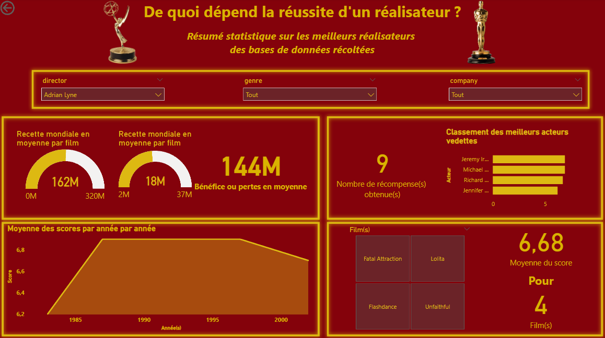

Bienvenue sur la page dédiée à mes compétences en PowerBi et Visualisation de Données, intégrées dans mon travail. Ces compétences sont essentielles en science des données et au parcours VCOD du BUT STID.
Durant mon parcours, j'ai maîtrisé divers langages de programmation et outils de gestion et visualisation de données.
Dans les sections suivantes, je présenterai plusieurs projets démontrant ma capacité à visualiser des données et plus encore. Vous y trouverez des exemples de code, des captures d'écran, et d'autres preuves tangibles de mon travail.
Ces projets illustrent ma maîtrise technique et ma capacité à appliquer ces compétences pour résoudre des problèmes réels et fournir des insights précieux. J'espère que ces exemples seront illustratifs de mes compétences.
Exemples à travers des projets
Ligue 1 & Power Bi
Durant ma deuxième année de BUT en Science des données, j'ai eu l'opportunité de réaliser un projet consistant à collecter, traiter, et visualiser des données grâce à du code Python. J'ai décidé d'extraire les données du site de la Ligue 1, étant moi-même amateur de football, puis de créer une visualisation. Ce projet était intéressant car nous devions non seulement réaliser la visualisation, mais aussi nous occuper de la récolte et du traitement des données, deux phases extrêmement importantes dans le travail d'un Data Analyst, un métier que je pourrais exercer.
Film & Power Bi / Talend
 

Le deuxième projet intéressant que j'ai pu réaliser concerne le traitement et la visualisation de données. C'est aussi un projet que j'ai réalisé en deuxième année de BUT. Ce projet avait pour but de traiter des données de films concernant des réalisateurs, des acteurs, le box-office, etc. Les données ont été traitées avec Talend, un outil de traitement de données, puis visualisées avec Power BI, comme vous pouvez le voir à gauche.